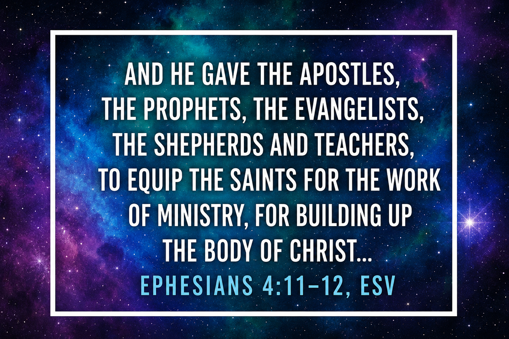

"Truly the signs of an apostle were accomplished among you with all perseverance, in signs and wonders and mighty deeds."
2 Corinthians 12:12 (NKJV)What Is an Apostle?
The word apostle comes from the Greek apostolos, meaning "one who is sent" — a commissioned messenger or delegate. In the New Testament, the apostle is the first of the five-fold gifts mentioned in Ephesians 4:11, and for good reason: apostles are foundation-layers and pioneer builders.
An apostle is called and sent by God into new territory — spiritually, geographically, or culturally. They establish kingdom foundations where none exist, plant churches, and carry a governmental anointing in the Spirit that brings divine order. Where the apostle goes, transformation follows.
Apostolic Function
The apostle operates across several dimensions:
- Pioneer: They go where the gospel has not yet penetrated and establish a kingdom beachhead.
- Builder: They lay foundations — doctrinal, relational, and structural — on which the church can grow.
- Father: They nurture spiritual children and release other ministry gifts. Paul called himself a "wise master builder" (1 Corinthians 3:10).
- Governmental: They carry an anointing of divine authority and order, bringing alignment to what is out of order in the church.
"According to the grace of God which was given to me, as a wise master builder I have laid the foundation, and another builds on it. But let each one take heed how he builds on it."
1 Corinthians 3:10 (NKJV)Apostles Today
Many have argued that the office of apostle ended with the original twelve (or with Paul). However, Ephesians 4:11–13 makes clear that all five gifts continue "till we all come to the unity of the faith" — a goal the church has not yet reached. The New Testament itself records apostles beyond the Twelve: Barnabas (Acts 14:14), Silas (1 Thessalonians 1:1, 2:6), James the Lord's brother (Galatians 1:19), and others.
The apostolic gift is active today. You may recognize an apostle by their fruit: they break new ground, they build with wisdom and longevity, signs and wonders accompany their ministry, and the churches or works they establish have a solid, lasting foundation.